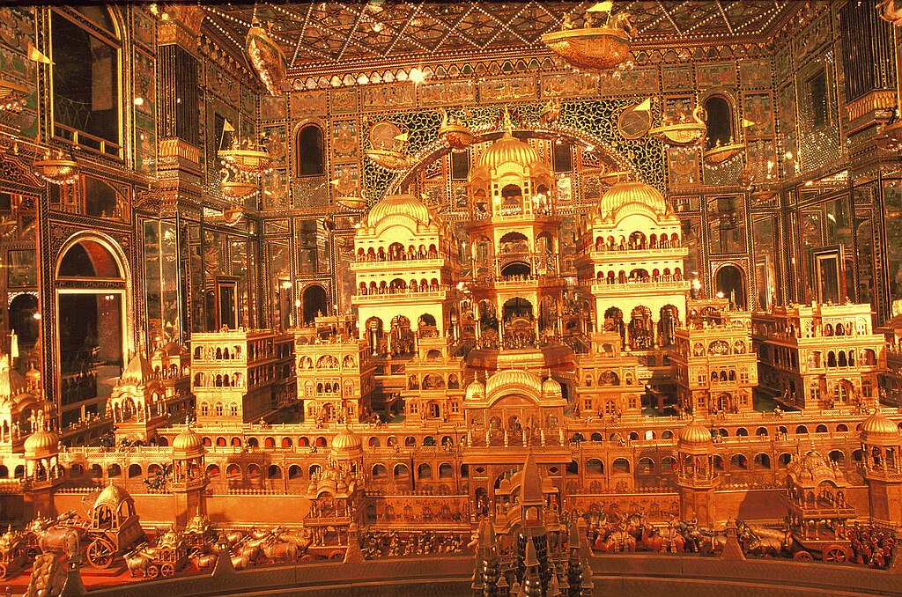

Yogyakarta is named after the Indian city of Ayodhya, the birthplace of the eponymous hero Rama from the Ramayana epic. Yogya means "suitable; fit; proper", and karta means "prosperous; flourishing". Thus, Yogyakarta means "[a city that is] fit to prosper"
